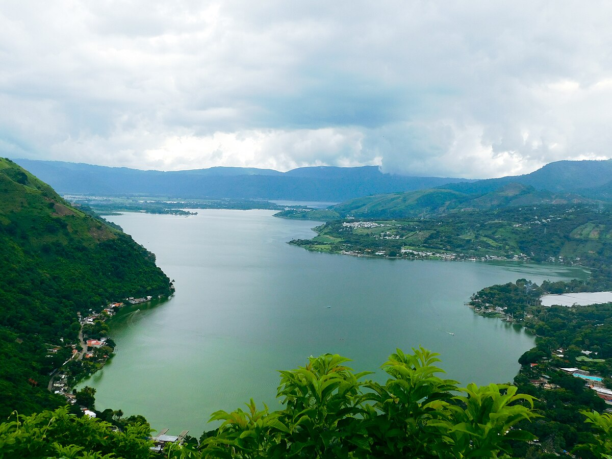
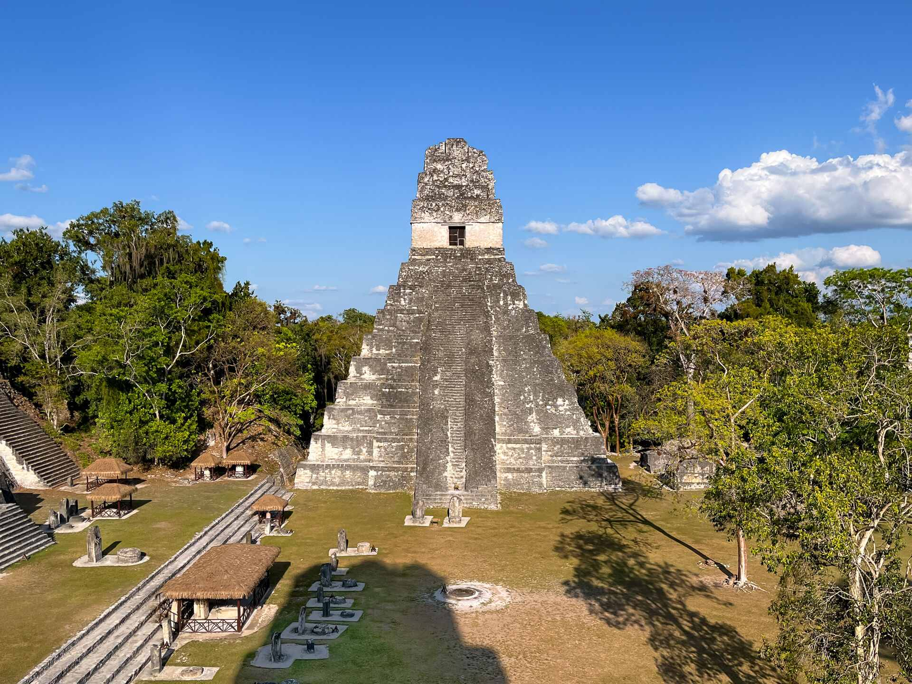

Izabal es uno de los veintidós departamentos que conforman Guatemala, está situado en la región nor-oriental de Guatemala. Limita al norte con el departamento de Petén, con Belice y el mar Caribe; al sur con el departamento de Zacapa; al este con Honduras; y al oeste con el departamento de Alta Verapaz.
La ciudad de Amatitlán actualmente se ubica dentro de las 20 ciudades más importantes de Guatemala, forma parte de la Mancomunidad Gran Ciudad del Sur y se localiza a 27 kilómetros al sur de la Ciudad de Guatemala y a 12 kilómetros de Villa Nueva con una altitud de aproximadamente 1188 metros sobre el nivel del mar..
Antigua Guatemala o simplemente Antigua, es una ciudad en el altiplano central de Guatemala. Entre 1543 y 1776 fue la capital colonial española de América Central y es famosa por su arquitectura barroca colonial en buen estado de conservación, así como un gran número de ruinas de iglesias coloniales.

Situado en el corazón de una selva de vegetación lujuriante, Tikal es uno de los sitios más importantes de la civilización maya. Fue habitado desde el siglo VI a.C. hasta el siglo X d.C. Su centro ceremonial comprende templos y palacios soberbios, así como plazas públicas a las que se accedía por rampas.
| Fecha | Horario | Actividad | Lugar |
|---|---|---|---|
| 01/08/2024 | 08:00 - 10:00 | ir en lancha | Izabal |
| 01/08/2024 | 10:30 - 12:00 | Visita por el centro | amatitlan |
| 01/08/2024 | 12:30 - 14:00 | Almuerzo | Antigua Guatemala |
| 01/08/2024 | 14:30 - 16:00 | Observación de Fauna | Tikal |